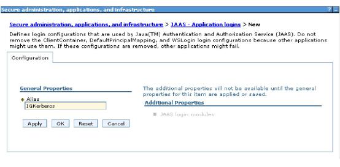
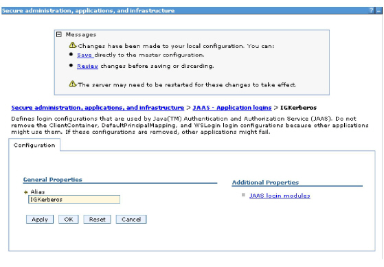
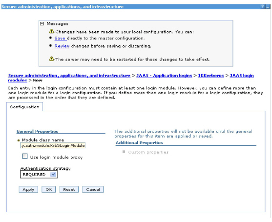

|
IdentityGuard Server 11.0 Administration Guide |
|
IdentityGuard Server 11.0 Administration Guide |
If you are using a domain controller for external authentication on WebSphere, you must also complete the following procedure. (This procedure uses WebSphere 6.1.)
To use a domain controller for external authentication on WebSphere
1. Make sure your WebSphere server is running.
2. Start the administration console for your WebSphere server.
3. Select Security > Secure administration, applications, and infrastructure > Java Authentication and Authorization Service > Application Logins.
4. On the Secure administration, applications, and infrastructure page, click New.
The Configuration pane appears.
5. Set the Alias value to IGKerberos

6. and click Apply.
The JAAS login modules link under Additional Properties becomes available.

7. Click JAAS login modules.
The JAAS login modules options appear.
8. Click New.
The Configuration pane reappears with additional options.

9. Set the Module class name to com.ibm.security.auth.module.Krb5LoginModule.
10. Click Apply.
11. Click Save.